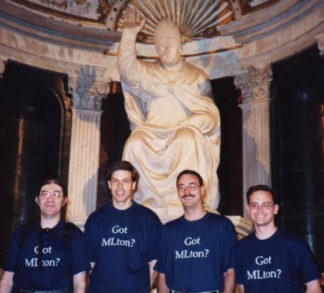

- Henry Cejtin
- Chief Architect at Sourcelight Technologies.
- Matthew Fluet
- PhD student in the Computer
Science department at Cornell University.
- Suresh Jagannathan
- Employee at
StorageNetworks.
- Stephen
Weeks
- Member of research staff at InterTrust's STAR Lab.
Here is a shot of some of us being blessed by the Pope inside the Palazzo
Vecchio in Florence, Italy, while attending ICFP 2001. From left to right
we have Henry Cejtin, Stephen Weeks, Neal Glew (who promises to write us an
optimization pass real soon now), and Matthew Fluet.

Last modified: Mon Nov 5 15:38:51 PST 2001